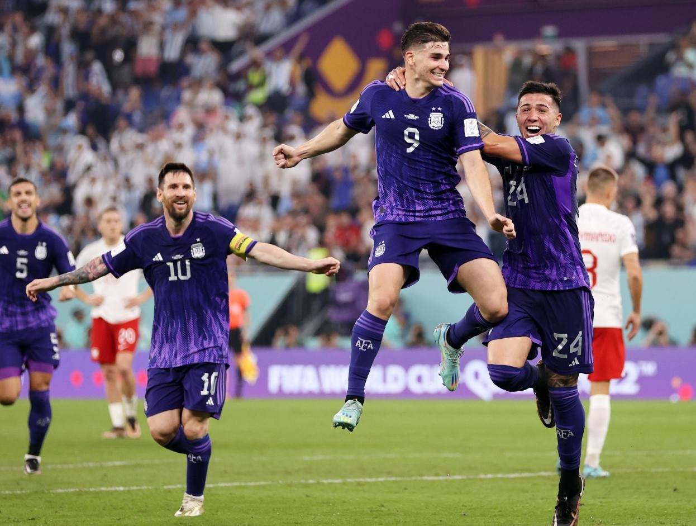

Argentina
Campeones del mundo
Argentina se consagró campeón del mundo al derrotar este domingo por penales a Francia 4 a 2 en la final de Qatar 2022 que se disputó en el estadio Lusail de Doha y logró su tercer título en la historia, tras Argentina 1978 y México 1986. En los 90′ reglamentarios el juego que arbitró el polaco Szymon Marciniak terminó 2 a 2 y, tras 120′, 3 a 3.
total, el conjunto de Lionel Scaloni disputó siete partidos con cuatro triunfos ante México, Polonia, Australia y Croacia; dos empates ante Países Bajos y el combinado galo; y una derrota contra Arabia Saudita en el debut. En total, marcó 15 goles y recibió ocho. El máximo artillero fue Lionel Messi con siete anotaciones, cuatro de ellas de penal, seguido de Julián Álvarez con cuatro. Marcaron una vez cada uno Enzo Fernández, Alexis Mac Allister, Nahuel Molina y Ángel Di María.
De los 26 jugadores que incluyó en la lista para el torneo, el director técnico utilizó a 24. Solo no ingresaron los dos arqueros sustitutos de Emiliano “Dibu” Martínez: Gerónimo Rulli y Franco Armani, La selección argentina logró el tercer título en su historia con cuatro victorias, dos empates y una derrota en siete partidos.
Uno por uno, los siete partidos de Argentina
Primera etapa - Grupo C.
Argentina 1-2 Arabia Saudita:
El debut del equipo de Lionel Scaloni fue la primera gran sorpresa del Mundial porque cayó ante los árabes, a pesar de que empezó ganando con un penal de Lionel Messi y le anularon dos tantos a instancias del VAR. En el complemento, los asiáticos aprovecharon una ráfaga de cinco minutos y dieron vuelta el resultado con tantos de Saleh Al-Shehri y Salem Al Dawsari para quitarle a la selección nacional su invicto de 36 partidos.
Argentina 2-0 México:
En un encuentro decisivo por la caída en el debut, la albiceleste dio la cara y lo sacó adelante con tantos de Messi y Enzo Fernández. Sufrió y necesitó de un destello de su figura para encaminar un encuentro trabado y en el que asumió el protagonismo, pero falto de confianza le costó 64′ abrir el marcador.
Polonia 0-2 Argentina:
El elenco sudamericano disputó el duelo con la necesidad de ganar para avanzar a la próxima etapa y pasó por arriba a un oponente que buscó el empate. En el primer tiempo, le costó generar situaciones y Wojciech Szczesny, uno de los mejores arqueros del Mundial, le atajó un penal a Messi. Pero Alexis Mac Allister abrió la cuenta apenas arrancó el complemento y, después, Julián Álvarez sentenció la historia para que la Argentina gane la zona y avance a octavos de final.

Octavos de final
Argentina 2-1 Australia:
El resultado no reflejó el trayecto del encuentro, que la Albiceleste dominó durante 80 minutos. Un gol de Messi y otro de Álvarez en el segundo tiempo parecían suficientes para el triunfo, pero los Socceroos descontaron con un remate que se iba afuera, pero se desvió en Enzo Fernández que descolocó a Emiliano “Dibu” Martínez. Desde entonces, se la hicieron pasar mal a los sudamericanos, que recién respiraron con tranquilidad cuando su arquero tapó un mano a mano increíble a Garang Kuol.
Cuartos de final
Argentina (4) 2-2 (2) Países Bajos:
Otra vez, el equipo de Scaloni le puso pimienta a un partido que tenía en el bolsillo con goles de Nahuel Molina en el primer tiempo y Messi de penal en el complemento. Pero los neerlandeses nunca se dieron por vencidos, Louis Van Gaal metió gente alta en ataque y llenó el área argentina de centros. Uno de ellos lo cabeceó Wout Weghorst y descontó. Ya en el adicionado, al delantero de Besiktas de Turquía le hicieron la falta en la puerta del área que derivó en el tiro libre donde él mismo, tras una jugada preparada, estableció la parda y estiró el juego. En los 30′ del suplementario la Argentina mereció el triunfo y un remate de Enzo Fernández dio en el palo, pero tuvo que llegar hasta los penales y, otra vez, apareció “Dibu” Martínez. El guardametas de Aston Villa atajó los disparos de Virgil van Dijk y Steven Berghuis, sus compañeros hicieron cuatro de cinco y la selección nacional se metió entre los mejores cuatro conjuntos del torneo.
Semifinal
Argentina 3-0 Croacia:
Fue el encuentro más sencillo que tuvo en las etapas de eliminación directa, aunque en la primera media hora debió cuidar su arco porque su rival le quitó la pelota. Desde que Messi cambió por gol un penal que le cometieron a Álvarez, encaminó la victoria y pase a la definición. Enseguida después de la primera ventaja, el atacante de Manchester City amplió la distancia con una jugada individual y, en el segundo tiempo, el del PSG hizo magia, ‘sacó a pasear’ al gigante Joško Gvardiol y asistió a la joya formada en River para establecer el resultado definitivo.
Final
Argentina (4) 3-3 (2) Francia:
La selección nacional estaba destinada a sufrir en Qatar 2022 y ni siquiera un duelo que dominó 75 minutos pudo concluir sin angustia. Se imponía por dos tantos de diferencia y con chances concretas de hacer el tercero. Messi de penal abrió la cuenta a los 23′ y a los 36′ la estiró Ángel Di María con una precisa definición en un contraataque perfecto. Pero el campeón en Rusia 2018 nunca se dio por vencido, aún cuando no le encontraba la vuelta al juego, y descontó a través de un penal de Mbappé que Nicolás Otamendi le hizo innecesariamente a Randal Kolo Muani. Un minuto después, a los 81, la defensa argentina quedó mal parada y el delantero de PSG definió de volea un pase que recibió de cabeza en la puerta del área. En el suplementario, el conjunto de Scaloni asumió nuevamente el protagonismo y generó situaciones. Lautaro Martínez no pudo concretar las que tuvo, pero sí Messi cuando le quedó la pelota boyando en el área chica. Cuando parecía que el conjunto nacional se llevaba el trofeo, Gonzalo Montiel cubrió con el brazo un remate al arco y el árbitro polaco Szymon Marciniak marcó penal. Nuevamente Mbappé cambió el tiro por gol. Devastada anímicamente, a la Argentina la rescató Emiliano Martínez. En el minuto 120 “Dibu” le atajó con su pie izquierdo un mano a mano a Kolo Muani y en la tanda de penales se adueñó del remate de Kingsley Coman. Luego, Aurelien Tchouameni falló y Montiel, luego de las conversiones de Messi, Paulo Dybala y Leandro Paredes, le dio el tercer título mundial a la Argentina.
Así fue como Lionel Andrés Messi Cuccittini logro obterner el titulo tan soñado con la seleccion Argentina Como lo era el mundial, y el debate con cualquier otro jugador termino. Siendo el el mejor de la historia (GOAT).